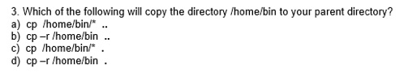
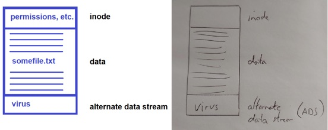

Tips to survive teaching an online course
Monday, March 16, 2020
The COVID-19 virus has forced colleges and universities in Canada to quickly move their stuff to an online format to allow classes to continue using social isolation. One teacher even wrote a funny song about it: https://www.youtube.com/watch?v=CCe5PaeAeew

I’m luckier than most, since I’ve been doing online seminars and classes for a wide variety of different organizations for many years now. Most of these sessions have been Train the Trainer (TTT) classes where I teach a course to other technical instructors worldwide. Apparently I’ve gotten so good at it that I was voted best TTT instructor in 2019 by members of the Computing Technology Industry Association (CompTIA), and won their annual award at their summit in Vegas!
And while many “How to teach online” posts and videos have appeared this past week, none of them I’ve seen mention what you “actually” need to pull it off, so I thought I’d offer my take on it here.
While the physical classroom environment can’t be replicated online, there are ways to make an online learning experience great - and it’s merely a combination of what you already know with some online-only tips and tricks.
1. First, you need some tools:
-
•A modern computer with a webcam and microphone. Most laptops come with these already, but desktops often do not.
-
•A reliable Internet connection. A basic Internet plan is fine as long as it’s high speed.
-
•Video conferencing software. This could be Zoom, ON24, Microsoft Teams, Cisco WebEx, or one or several others. The one you use should have these core features:
-
•The ability to do in-person video/audio and screen sharing
-
•A chat window
-
•The ability to share files
-
•The ability to record a session for later viewing
The video conferencing software is your home online. For your class to participate with you online, you must invite each attendee to your group in the video conferencing software (your organization may instead do this). Next, you start a video/audio conference call at the beginning of each class where students can see you and hear you speak. In this conference call, you can display and narrate a slide deck (e.g. PowerPoint) to students, as well as use or demonstrate programs on your PC that you wish to screen share. You can also screen share your entire Desktop to get the same experience as using a classroom projector (just move any personal files from your Desktop to another location first).
2. Preparing for an online class:
-
•Explore the video conferencing software as much as possible. Don’t try to learn every feature of this software. Just focus on the core functionality (the rest can come over time, and only if you find it useful). Your organization may train you how to use this software, or provide videos that walk you through the configuration.
-
•Design your class around a slide deck (e.g. PowerPoint). This provides a central structure for your class that you can return to. The slide deck should also start with an agenda.
-
•Plan to provide continuous visual and audio stimulation at all times. Instead of narrating a particular slide for a long period of time, break the slide up into several smaller slides that you can advance periodically as you talk.
-
•Plan to switch your delivery methods frequently (e.g. every 5 slides). You could switch to a screen share to demonstrate software configuration or open a Web page, or you could introduce a discussion topic or question that students can respond to in the chat window. For example, after discussing the cp command in a Linux course, I may ask students to answer this question in the chat window (give them 30 seconds to respond before taking up the answer):

-
•Do what is comfortable for you. When creating custom content for a slide deck, you could create a diagram in a program such as Microsoft Paint if you are quick doing so, or you could just write it on paper, take a picture of it with your phone and add it:

-
•Plan to assign homework tasks or lab exercises each class. Online training should always extend beyond the online presentation component. These tasks and exercises can be reviewed and discussed at the beginning of the next class using the chat window.
-
•Plan for an online session that takes no more than 2 hours. We can only stay focused in an online session for up to 2 hours, which is why it is widely considered the maximum time for online training sessions. If your organization teaches a class for more than 2 hours, you could use the remaining time to help students with their homework tasks or lab exercises using the chat or individual video calling features of your conferencing software.
-
•Plan to provide your students with as much direction as possible. Any detailed information that is easily lost during a demonstration or when a slide advances should be provided to students. This can include hyperlinks, supporting files, commands, and so on. If you share your PowerPoint presentation with your students or record each session, you can put this information in the slide deck itself. Alternatively, you could put this information in a file that you upload to your video conferencing software or send to students in a follow-up email.
3. Before starting an online class:
-
•Make sure you eliminate possible audio distractions on your end. This means putting kids and pets somewhere you can’t hear them, as well as turning the ringer off on all phones (mobile and landline). Since my dog likes to bark at things she sees outside of my big living room window, I put up a doggy gate at the living room entrance before online training to ensure she can’t get to that window.
-
•Unplug any virtual assistants (e.g. Google Home, Amazon Alexa) and make sure your family members aren’t playing online games or watching online videos (e.g. YouTube/Netflix) to guarantee Internet bandwidth for your session.
-
•Test your audio and video. You may need to enable these in your conferencing software and operating system, or adjust their levels. If there is audio static, turn down the volume on your speakers to prevent the audio feedback loop. If video is not working, check to ensure that the shutter on your webcam isn’t closed.
-
•Fill a sealable bottle with water and keep it at your feet. Online training involves more talking than classroom training, so you’ll need it if your mouth gets dry.
-
•Take a bathroom break. Just like you do before going on a long car ride.
4. When teaching an online class:
-
•Mute all students at the beginning of the session. The amount of background audio feedback from students will prevent you from hearing anything. Most conferencing software has a “mute all” function, but you may have to mute each student connection individually in the software, or ask participants to mute their own microphones.
-
•Keep it simple and informal. Students feel more comfortable (and hence learn more) in a casual session.
-
•Focus on the material and the students. While most of what you do will be presenting or demonstrating material, try to interact with your students as much as possible. This means providing regular questions or discussion topics. Periodically pause during your session and ask “Does anyone have any questions about ______?” and give people time to respond.
-
•Talk slower and watch your chat window continuously for student questions. You could respond to them right away, or periodically (e.g. after you finish a topic or sentence) depending on your teaching style.
-
•Do NOT aim for perfection. This isn’t Broadway, and you’ll gradually get better and better after doing many more online sessions.
-
•Expect things to go wrong. When they do, give your class a 5 minute discussion break so that you can try to resolve them. Also keep your tech support phone/email handy!
Hope this helps!
Cheers,
Jason.